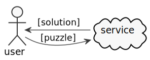
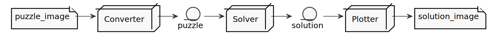

Intro
05 November 2021
A while ago, I was talking to some co-workers about how AI is trendy these days! However, I realized 2 interesting facts:
-
Most of my friends with strong Software Engineering backgrounds have little or very superficial knowledge of AI/ML;
-
Most of my friends with strong Data Science backgrounds don’t know how to build a product with the models they create.
Looking at this scenario, I decided that I could create a project to help build a bridge between these worlds. So, after seeing my girlfriend playing with some Sudoku puzzles, I realized this could be the perfect excuse for my plan.
After some research, I found that my idea was not that original. However, I was motivated and determined to continue with the project, but with my personal touch. Also, I hoped that by building this project I would be able to learn new tools/techniques and how to use them in an environment I was already familiar with. I can say that some time after starting the project, my expectations were surpassed. I learned a lot of new things and I hope to share some of the lessons I learned during this journey.
What is a Sudoku Puzzle?
Sudoku is a mathematical game that was invented in the late 1970s, became popular in Japan in the 1980s and became known internationally in 2005 when numerous newspapers began publishing it in their hobbies section.
The objective of the game is to place numbers from 1 to 9 in each of the empty cells in a 9x9 grid, consisting of 3x3 subgrades called regions. The puzzle contains some initial clues, which are numbers inserted into some cells, to allow an induction or deduction of numbers into empty cells. Each column, row, and region can only have a number from 1 through 9.
For instance, given the initial Sudoku state:
The final state must be:

Objective and Steps
The main objective was to build a service that could read a Sudoku puzzle image, identify the puzzle board, recognize the puzzle numbers, solve the puzzle, plot the result over the original image, and send the new image (with the solution) back to the user.

After the silly design of the main service, came the fundamental question of the project: how the hell do all the rest?
To get an answer to this question, let’s start with small steps. The first thought is to build a pipe, to convert the image into a puzzle representation (object), from this representation, find a solution, and covert the solution to a final image. The diagram below shows the big picture of this pipe. At this point, there are three main components acting on the process: Converter, Solver and Plotter.

The Converter component can be broken down into more sub-components:
-
Extractor: to find a Sudoku board in the image and split it’s cells into 81 (9x9) pieces;
-
Recognizer: to convert a piece (cell if an image number) into a numeric value (or nothing if the cell is empty).
Approaches and Tools
In this section, let’s dive into the engine’s components and get a better understanding of the nature of the problem and what tools and techniques are more appropriate to handle each one. Due to my experience with JVM as a Web Developer, I decided to investigate the platform’s AI/ML tools. Also, since the Kotlin language is becoming more popular, it will be used in the project.
Extractor
The main objective of the Extractor is to identify a Sudoku board in an image and break it down into 81 (9 x 9) images for every cell in this puzzle. To achieve this goal, the Extractor needs to detect the borders of a sudoku, change its perspective to a frontal view, apply some filters to clean the image, and crop the image into 81 different pieces.
This is basically a Computer Vision Problem. OpenCV is an open-source library that includes several hundred of computer vision (CV) algorithms. It is essentially a C++ API, but there are some Java APIs that can use its native interfaces. I found some different ports of OpenCv to Java, but the JavaCv lib turned out to be a good option, especially for its ease of use with build tools (Gradle, Maven). Its ability to generate artifacts for each platform (Linux, Windows, and Macos) is particularly noteworthy.
Recognizer
The Recognizer is responsible for converting a Sudoku cell (whenever it’s empty or with a number image) into computational numerical information. Since the Sudoku cells have a pre-defined range of possible numbers, the recognizer can use a model to classify an image into a number between 1-9.
This is a Classification Problem, a common kind of problem usually solved with Machine Learning models. There are tons of ML models trained to accomplish this goal. For this project, I will use the one created in this Kaggle Notebook.
The model was created using Python/Keras/Tensorflow, but it’s possible to use the trained model in the JVM world. By the time this project was developed, there were two promising projects that could use (or even train) an existing model to be used by the JVM. They Are:
The Sudoscan Project has implementations for both libraries.
Solver
The Solver is responsible for reading a computational representation of an Unsolved Puzzle puzzle and generating a computational representation of a Solved Puzzle. The puzzle consists of 81 (9 x 9) Digits (previously discovered by a Recognizer from a Sudoku cell). A Sudoku puzzle contains a set of variables, a set of constraints and functions that maps each variable to a finite domain.
These characteristics make this step a Constraint Satisfaction Problem. CSP is a class of problem that can be solved with different tools. It can be solved with pure programming logic, but there are a set of different areas that can achieve the same objective using a declarative approach. Constraint Solvers (CS) are pieces of software that can model a CSP in a declarative way and then use a solver to find the expected solution. Another declarative approach (and more mathematical way) to solve this kind of problem is to model it as an Operations Research (OR) problem, and use a Mixed Integer Programming (MIP) solver to find the optimal solution. A comparison between these two approaches can be found in this Kaggle Notebook.
There are several solvers (commercial/open source) for these approaches. For the JVM, two lightway (and pure java) implementations are:
The Sudoscan Project also has implementations for both libraries.
Plotter
The main objective of the Plotter is to "paint" (or plot) the actual Sudoku solution back to its original image. It’s a way to combine real world information (the Sudoku board image) with virtual generated data.
This is also a Computer Vision Problem and as discussed before (in the Extractor sub section), the tool used for this task is the JavaCv lib.
Sudoku Engine
This is the component that uses all the previously described components and glues them together to generate the main component responsible for the full process.